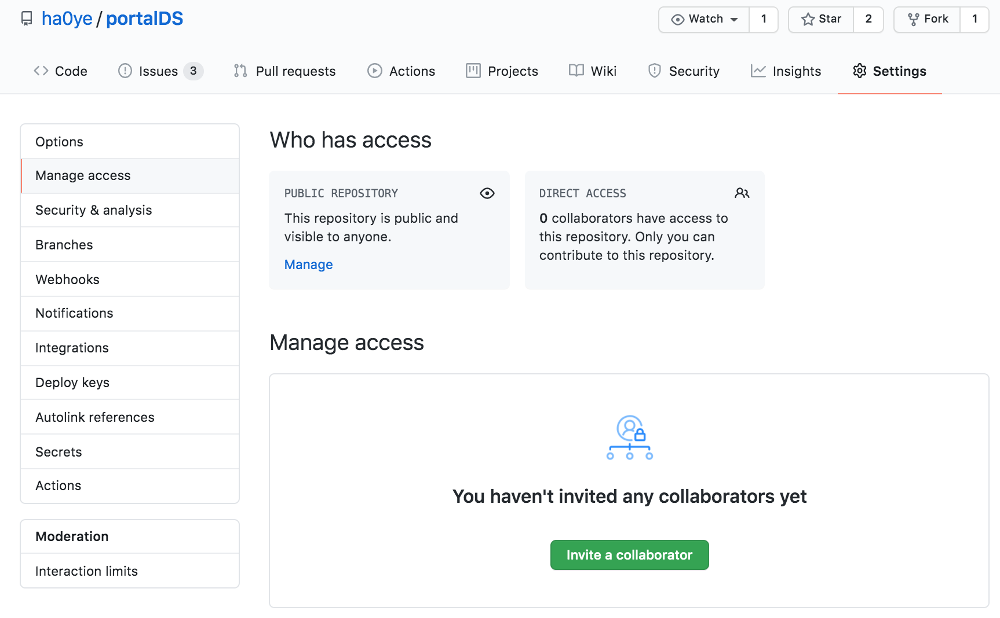
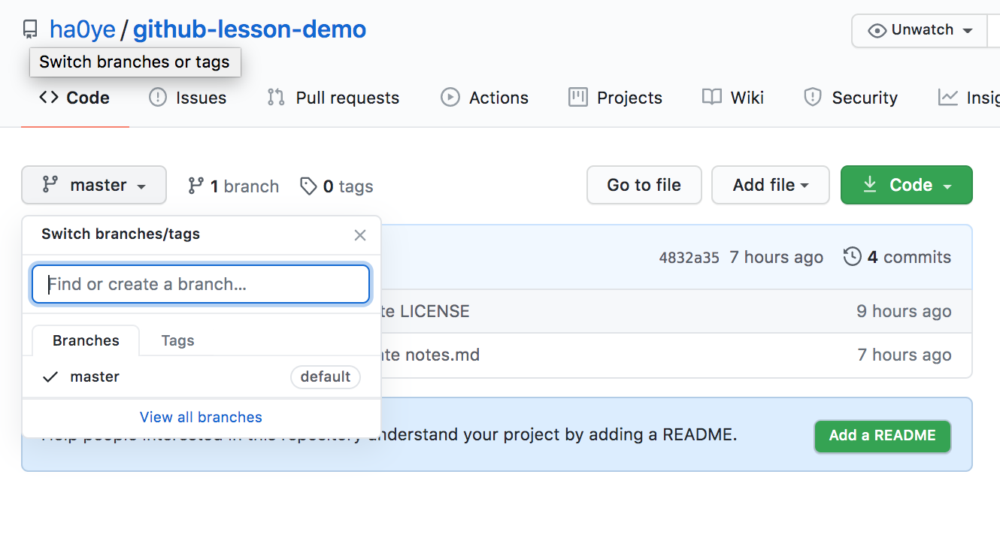
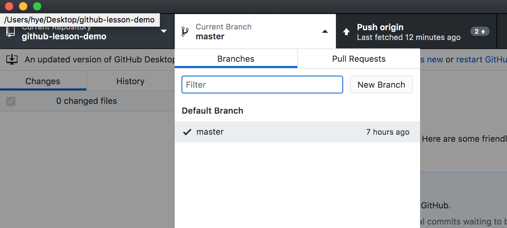

Syllabus
Hao Ye Health Science Center Libraries, University of Florida (updated: 2022-06-07)
Intro
- Motivations
- Version control can help you manage collaborative work.
- There are many ways to collaborate using Git… not all of these are ideal for small research teams!
- “GitHub flow” is a lightweight workflow for individuals and small teams.
- Learning Outcomes
- describe how merge conflicts originate and how to resolve them
- apply the “GitHub flow” workflow for collaborating
- create and navigate branches on GitHub and using GitHub Desktop
- create and merge pull requests
- understand “forks” and open-source-community development on GitHub
- Prerequisites This lesson assumes you:
- have some familiarity making repos and commits
- know how to synchronize repos from your computer to GitHub Such as via https://uf-repro.github.io/friendly-github-intro/
Merge Conflicts
- Inviting Collaborators
- I have a github repo, and would like to give my collaborator access to work on the project.
- From the github repo page:
-
Settings->Manage access -
Invite a collaborator
-
- Example collaboration Two people, A and B, are working together on one repo in GitHub:
- A creates new commits, A pushes the commits to GitHub.
- B pulls the latest commits from A (via GitHub), creates new commits, and pushes their commits back to GitHub.
- A pulls the latest commits from B (via GitHub), creates new commits, etc.
- What happens if you forget to pull? You get a warning when you try to push to GitHub.

- Merging
-
git mergecombines the changes from commits:- A and B start with commit:
{orig} - A makes commit
{a} - B makes commit
{b} -
git mergecombines{a}and{b}into a new commit{c}, that contains both sets of changes.
- A and B start with commit:
-
- Merging (automatically)
- IF the changes are in different files OR different parts of the same files
- git is generally able to create the merged commit without further intervention
- if git is unable to merge automatically, then there is a
merge conflict
- IF the changes are in different files OR different parts of the same files
- Resolving merge conflicts
- when git cannot combine the changes automatically, you must tell it what the correct contents should be for the merge commit.
- for a text file:

- Resolving merge conflicts 2
- After all the conflicts are resolved, you can create the merged commit.
- This merged commit can then be pushed to github without issue.
- For non-text files, git will not show you the differences across versions - you will need to combine changes yourself.
- e.g. open an image editor to edit the image file and incorporate changes from the two separate commits.
- Summary
- This approach works pretty well when:
- there is one primary contributor
- collaborators make changes rarely
- everyone knows the steps to pull, commit, push.
- everyone communicates that there are updates for others to pull from GitHub.
- This approach works pretty well when:
GitHub Flow
- Essentials of GitHub Flow
- Use
branchesto store all work progress. - Merge branches back to the primary branch when the work for that branch is complete.

- Use
- Steps
- Create a branch and switch to it.
- Add commits with desired changes.
- Open a pull request (PR).
- Review the PR if necessary, and merge.
- Delete branch if done.
Navigating Branches
- What is a Branch?
- A
branchis a label for a set of commits. [img: https://www.atlassian.com/git/tutorials/using-branches]
[img: https://www.atlassian.com/git/tutorials/using-branches]
- A
- If Git is a time machine that lets you navigate to different times (commits), then branches are alternate timelines.
- How do branches work?
- You start in the primary branch.
- each commit records changes from the previous commit
- result: a sequence of project versions
- Branches let you store multiple sequences.
- create a new branch - good for experiments
- merge if/when you want
- You start in the primary branch.
- Creating new branches (GitHub) 
- DEMO
- Creating new branches (GitHub Desktop) 
- DEMO
Merging Branches
- Merging (branches)
- Nearly the same as merging commits:
- merge all the changes from another branch to the current branch.
- switch to the branch that will hold the merged result
- merge from the other branch
- Nearly the same as merging commits:
- DEMO (GitHub Desktop)
- Pull Request (GitHub) Pull Requests:
- are recommended practice for merges on GitHub
- let you document the merge
- you can request official “review”
- other collaborators can comment, make further changes
- DEMO (GitHub)
Community-oriented Development on GitHub
- Issues
Issuesare conversations on GitHub:- reported bugs, feature requests, etc.
- anyone can contribute to discussion
- can be referred to by number in commits and pull requests
- DEMO
- Forks
- How do you contribute to other people’s projects?
- Fork = clone a repo on GitHub
- Forks retain memory of original repo
- Pull Requests can include merges from across forks.
- How do you contribute to other people’s projects?
- Contributing to OS Combining this all together, “Fork and PR” is a workflow for contributing to someone else’s project (without write access):
- fork a repo to your GitHub account
- make changes on the repo in your GitHub account
- create a pull request to ask for those changes to be merged into the original project repo ## Thanks
- Let me know what content you’d like to see
- Contact me for additional questions or consultation requests!
- Check back in on the libguide for more modules and contact info: